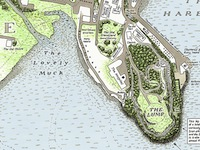
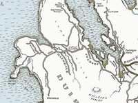

Staffin Island

It is one of the most prominent geographical features in Portree, but is somehow also quite hard to find from the centre of town. The Lovely Muck is more properly known as Bayfield.
Staffin IslandLovely Muck
The Lovely Muck is more properly known as Bayfield. It is one of the most prominent geographical features in Portree, but is somehow also quite hard to find from the centre of town.
Lovely MuckLumpy Hills
The Lump is a natural amphitheatre where the annual Highland Games is hosted.
Lumpy HillsBlack Cuillen

This map is perhaps the most detailed description of the walk, as it includes many of the incidental curiosities along the way.
Black CuillenImages copyright J. Maizlish Mole, guardian.co.uk